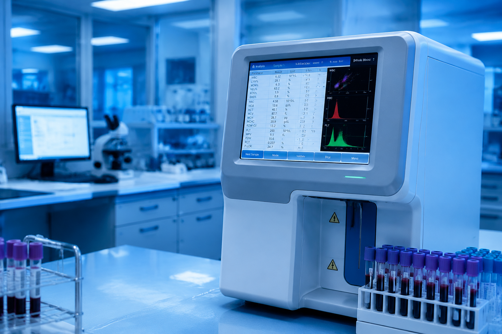
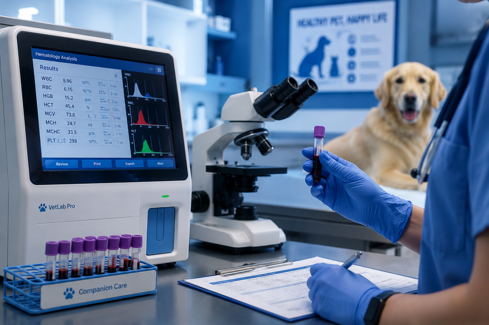
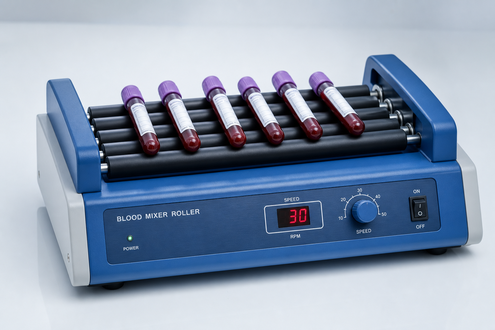
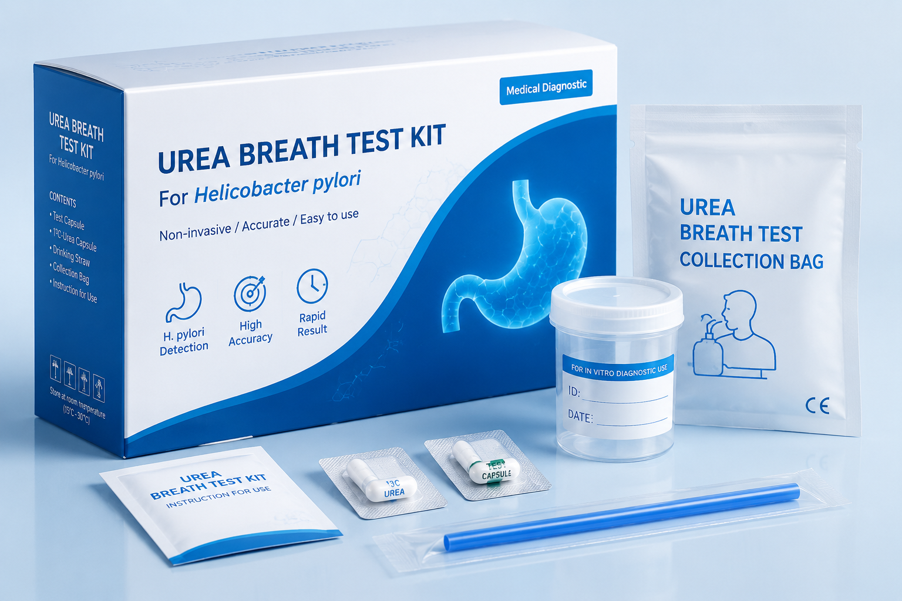
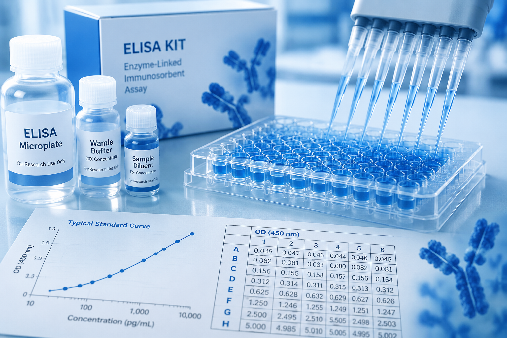
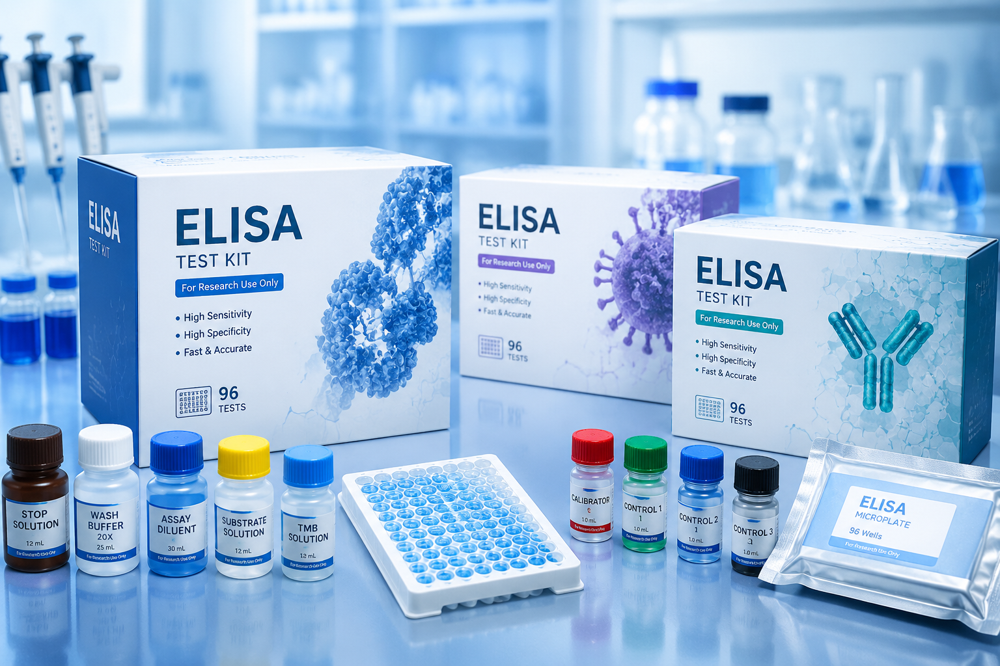

biotechTıbbi tanı dünyasından güncel haberler ve teknik makaleler
6 makale gösteriliyor

biotechModern laboratuvarlar için tam otomatik 6 parçalı kan sayım cihazı artık portföyümüzde. Hızlı ve güvenilir sonuçlar.

petsTam otomatik veteriner kan sayım cihazlarıyla teşhis süreçlerini hızlandırın. Küçük kan hacmiyle doğru sonuçlar.

settingsLaboratuvarlarda kan numunelerinin homojen karışımı için mikser roller kullanımı ve doğru teknik önerileri.

scienceNon-invaziv H.pylori tespiti için güvenilir ve hızlı üre nefes test kitleri. ISO sertifikalı, yüksek duyarlılıklı.

menu_bookSinoGeneclon Biotech markalı ELISA kitlerinin yer aldığı uluslararası bilimsel yayınlar ve araştırma sonuçları.

add_box2025 yılında portföyümüze eklenen yeni ELISA kit kategorileri ve genişleyen ürün yelpazemiz hakkında bilgi.
Bu kategoride henüz makale yok.
Uzman ekibimiz tüm sorularınızı yanıtlamaya hazır.